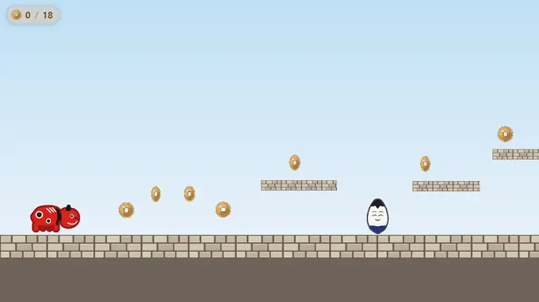
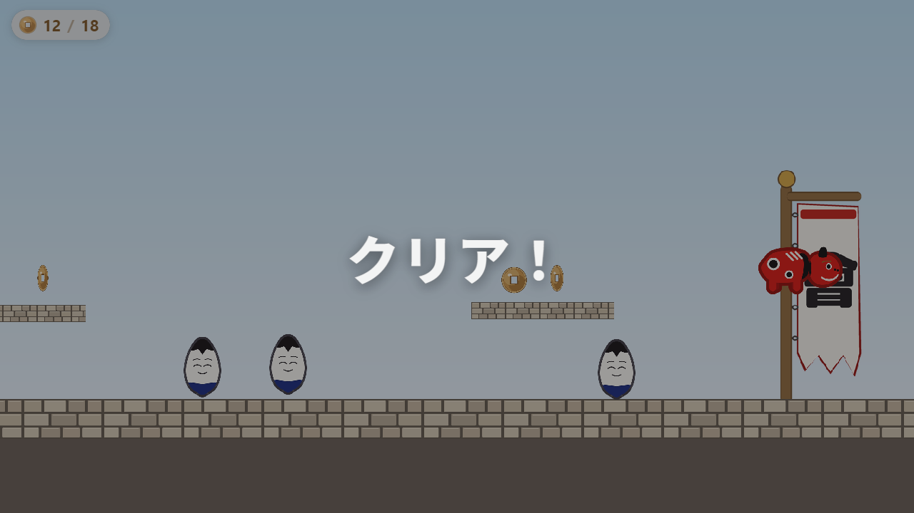

MitiruEngine
MitiruEngineHTML / CSS UI
HTML / CSS で画面を作る
ゲームのルールは C++、画面（スコア表示・メニュー・ダイアログ）は HTML と CSS で書く。C++ が名前を付けた値を送り、HTML 側は data-m-* 属性で受けるだけなので、つなぎ役の JavaScript を書く必要がない。あとはエンジン付属の部品が画面を自動で合わせる。

仕組み
状態を持つのは C++ だけ。C++ → 画面は「値を送る」、画面 → C++ は「操作を通知する」。この 2 方向しかない。ゲームの状態を HTML 側に持たせないので、表示がズレない。
hud.set → data-m-text）、画面 → C++ は「操作を通知する」（data-m-action → in.action）。この 2 方向だけで、状態は常に C++ 側にあります。どのファイルに書く
画面（HUD・メニュー）は assets/scene.html に書く。これが HTML のエントリポイントで、エンジンがゲーム画面の上に重ねる。CSS はその <style> の中（別ファイルにしても良い）。C++ 側の hud.set(...) は update(Input in, Hud hud, float dt) の中に書く（送るには引数の Hud hud が要る）。完成形のファイル全体は 下の完成例を見てほしい。
読み込む 2 行
scene.html の末尾で、エンジン付属の部品を 2 つ読み込む。mitiru build が mitiru_runtime/ をシーンの隣へ自動コピーするので、書くのはこの 2 行だけ。
<script src="mitiru_runtime/mitiru_cef_state.js"></script> <!-- 受け渡し --> <script src="mitiru_runtime/mitiru_bind.js"></script> <!-- 同期役 -->
値を表示する
C++ で hud.set("view.…", 値) と送った値を、HTML 側で同じ名前を指して受け取る。data-m-* は HTML 標準の「data 属性」を使った目印で、「この要素に、この名前の値を結びつけて」という意味。たとえば data-m-text="view.hud.score" なら、「この要素の中身（テキスト）に view.hud.score の値を入れて」という指示になる。
C++ から値を送る
hud.set("view.hud.score", score); // 数値
hud.set("view.hud.combo", combo);
hud.set("view.boss.active", true); // 真偽
HTML で受け取る
<!-- textContent に値を入れる --> <div class="hud">SCORE <span data-m-text="view.hud.score">0</span></div> <!-- 文に埋め込む（テンプレート）--> <p data-m-tpl="コンボ {view.hud.combo} 連鎖！"></p> <!-- 値が真のときだけ表示 --> <div class="boss-bar" data-m-show="view.boss.active">…</div>
data-m-text の初期値（上の 0）は、まだ値が来ていないときに見えるフォールバック。書いておくと画面が一瞬空っぽにならない。
全属性
data-m-* は「HTML のこの場所と、C++ のこの値を結びつけて」という印。data-m-text だけ覚えれば、たいていの HUD は組める。他の属性は必要になったら下の表から足す。よく使う語彙はこの表と リスト用の子属性にまとまっています。どの例も貼り付ければそのまま動く。
| data-m-text | 指した値を、その要素の中身（テキスト）として出す。いちばん基本。<span data-m-text="view.hud.score">0</span> |
| data-m-tpl | 文の中の {名前} を値に置き換える。{名前:fmt} で整形も併用できる。<p data-m-tpl="コンボ {view.hud.combo} 連鎖！"></p> |
| data-m-format | data-m-text / data-m-tween に添えて整形。comma（桁区切り）・kmb（→1.2M）・pct（→62%）・time（秒→01:23）・int（小数を整数に）。<span data-m-text="view.gold" data-m-format="comma">0</span> |
| data-m-show / data-m-hide | 値が真（true や 0 以外）のとき表示／隠す。== != < > <= >= の条件式と !名前 の否定も書ける。<div data-m-show="view.boss.active">…</div> |
| data-m-class | クラス名: 条件 と書くと、条件が真のときだけそのクラスが付く（; 区切りで複数可）。見た目の変化は CSS 側で。<div data-m-class="danger: view.hp <= 20">…</div> |
| data-m-style | 値を CSS の数値に流す。ゲージの伸び縮みなど。<div class="fill" data-m-style="width: {view.hp.pct}%"></div> |
| data-m-attr | テキストではなく src や title・aria 系などの属性に値を入れる（; 区切りで複数可）。<img data-m-attr="src: {view.face}"> |
| data-m-flash | 値が変わった瞬間に m-flash クラスを一瞬付ける。光らせ方は CSS 側で書く。<span data-m-text="view.score" data-m-flash="view.score">0</span> |
| data-m-tween | 数値が変わったとき ~0.3 秒でなめらかにカウントアップ／ダウン（同じ要素の data-m-text より優先）。<span data-m-tween="view.score">0</span> |
| data-m-action | ボタンの click を C++ に通知する（→操作を伝える）。<button data-m-action="start">はじめる</button> |
| data-m-arg | data-m-action に載せる値。引用符付きは文字列・数値はそのまま・それ以外は状態のパス（リスト内なら項目の値）。<button data-m-action="select" data-m-arg="'hard'">むずかしい</button> |
| data-m-input | テキスト入力欄（名前入力等）。Enter / フォーカスアウトで確定値が C++ に届く。IME 変換中は送らない。<input data-m-input="profile.name"> |
| data-m-input-live | data-m-input に添えると、確定前も入力の度に送る（150ms 間引き）。検索欄など。<input data-m-input="search.q" data-m-input-live> |
| data-m-repeat | 可変リストを <template> で並べる。子属性（fields / sep / fsep / type / case / key / pos / rot / leave）は →リストを並べる。<div data-m-repeat="view.hand"><template>…</template></div> |
| data-m-debug | 開発用。<body data-m-debug>（か URL に ?mdebug=1）で、C++ が送っていない未知の名前をコンソールに警告する。 |
| m-flash / m-enter / m-leave | 属性ではなく、エンジンが自動で付けるクラス。値の変化（flash）・リスト項目の登場（enter）・退場（leave）を CSS アニメの起点にできる。 |
data-m-class：条件でクラスを付ける（色・アニメ）
<div class="hpbar" data-m-class="danger: view.hp <= 20">…</div>
<style>
.hpbar.danger { color: red; animation: blink 1s infinite; } /* danger が付くと赤点滅 */
</style>
hp が 20 以下になると danger クラスが付いて、バーが赤く点滅する。
data-m-style：値を CSS の数値に流す（ゲージ）
<div class="bar">
<div class="fill" data-m-style="width: {view.hp.pct}%"></div>
</div>
hud.set("view.hp.pct", 62) で中の fill の幅が 62% に。値が変われば伸び縮みする。
data-m-flash / data-m-tween：変化を演出する
<!-- スコアが変わるたび m-flash クラスが一瞬付く（取得演出）--> <span data-m-text="view.score" data-m-flash="view.score">0</span> <style> .m-flash { animation: pop .3s; } </style> <!-- 0 → 新しい値へ ~0.3 秒でカウントアップ --> <span data-m-text="view.score" data-m-tween="view.score">0</span>
操作を伝える
画面 → C++ は「操作の通知」だけ。ボタンに data-m-action を付けると、押された合図が C++ に届く。中の処理（ゲームのルール）は C++ が決める。
<button data-m-action="start">はじめる</button> <button data-m-action="select" data-m-arg="'hard'">むずかしい</button>
data-m-arg は引用符付き（'hard'）なら文字列、数値（42）ならそのままの値、それ以外は状態のパスとして解決されて C++ に届く。スライダーやドロップダウン（input / select）に data-m-action を付けると、現在値が合図と一緒に渡る。設定画面の音量調整などに使える。
C++ 側は update の中で受ける。
if (in.action("start")) startGame(); if (in.action("select")) chooseDifficulty(/* arg */);
data-m-input：テキスト入力欄
<input data-m-input="profile.name" placeholder="なまえ">
<input data-m-input="search.q" data-m-input-live> <!-- 入力の度にも送る (150ms 間引き) -->
Enter かフォーカスアウトで確定し、C++ には合図 input:profile.name と入力値が届く。日本語の IME 変換中は送らないので、変換途中の文字列が混ざらない。
if (in.action("input:profile.name")) setName(in.actionPayload("input:profile.name")); // {"value":"入力された文字"}
リストを並べる
手札・インベントリ・ランキングのような可変リストは data-m-repeat と <template> で。要素は使い回されるので、毎フレーム更新しても重くならない。
<div class="hand" data-m-repeat="view.hand">
<template>
<div class="card" data-m-action="play" data-m-arg="i">
<span data-m-text="cost"></span>
<span data-m-text="name"></span>
</div>
</template>
</div>
リストの中では、項目のフィールドを view.… を付けずそのまま（data-m-text="name"）指す。C++ 側の送り方の本名は StateWriter です。array() / list() で組み立てて hud.set で送る（→機能リファレンス §HTML / CSS で画面）。
大量の要素はコンパクト区切りで：data-m-fields
毎フレーム動く大量の要素（弾・敵・コイン）は、JSON ではなく区切り文字列で送るほうが軽い。C++ が "2,80,120;1,300,60" のように送り、HTML 側は data-m-fields で各列に名前を付けて受ける。
<!-- C++: hud.set("view.scene", "2,80,120;1,300,60"); 列は t,x,y -->
<div class="field" data-m-repeat="view.scene" data-m-fields="t,x,y">
<template data-m-case="1"><div class="coin" data-m-pos="x,y"></div></template>
<template data-m-case="2"><div class="enemy" data-m-pos="x,y"></div></template>
</div>
data-m-case は「種類の列（既定 t、data-m-type で変更）がこの値の項目には、このテンプレートを使う」という出し分け。data-m-pos は項目の座標を transform: translate(x,y) に変換するので、要素は CSS だけで画面を動き回る。
並べ替えをスライドさせる：data-m-key
data-m-key を付けると、要素が「何番目か」ではなく key で保持される。順位が入れ替わっても要素が作り直されないので、CSS の transition がそのまま「順位が滑らかに入れ替わるランキング」になる。
<ol class="rank" data-m-repeat="view.rank" data-m-key="id" data-m-leave>
<template><li class="row" data-m-tpl="{name} — {score}"></li></template>
</ol>
<style>
.rank .row { transition: transform .3s; } /* 入れ替えがスライドに */
.rank .row.m-enter { opacity: 0; } /* 登場 (生成直後に一瞬付く) */
.rank .row.m-leave { animation: fadeout .3s forwards; } /* 退場 (終わってから削除) */
</style>
repeat の子属性：一覧
| data-m-fields | コンパクト区切りの列名。data-m-fields="t,x,y"（JSON のリストなら不要）。 |
| data-m-sep / data-m-fsep | 項目の区切りと列の区切りを変える（既定 ; と ,）。 |
| data-m-type | テンプレートの出し分けに使う列名（既定 t）。 |
| data-m-case | <template data-m-case="2">。type 列がこの値の項目に使うテンプレート。 |
| data-m-key | 項目をこのフィールドで保持。並べ替えが CSS transition のスライドになる。 |
| data-m-pos | data-m-pos="x,y"。項目のフィールドを transform: translate に。 |
| data-m-rot | 要素に回転を付ける（度数のリテラル。data-m-pos と併用可）。 |
| data-m-leave | 消えた項目を即削除せず m-leave クラスを付け、CSS アニメの終了後（最長 400ms）に削除。 |
| m-enter | 生成直後の要素に一瞬付く自動クラス（属性ではない）。登場アニメの起点。 |
完成例
「はじめてのゲーム」の赤べこが使っている assets/scene.html。左上の古銭カウンタと、ゴール時の「クリア！」を、これだけで作っています。手書きの JavaScript は 1 行もありません。C++ が view.coins / view.total / view.cleared を送り、data-m-* が受けるだけ。見た目は普通の CSS。

data-m-text）も、中央の「クリア！」（data-m-class で暗転＋拡大）も、この scene.html と CSS だけ。C++ は値を送っているだけです。<!-- assets/scene.html --> <!doctype html> <html lang="ja"><head><meta charset="utf-8"> <style> body { margin: 0; background: transparent; font-family: sans-serif; } /* 古銭カウンタ（左上の丸いピル）*/ .coins { position: absolute; top: 14px; left: 16px; display: flex; align-items: center; gap: 8px; padding: 6px 16px; border-radius: 999px; background: rgba(255,252,246,.82); color: #7a5320; font-weight: 700; font-size: 22px; } .coins img { width: 26px; height: 26px; } /* 「クリア！」。show が付いたときだけ暗転して出す */ .clear { position: absolute; inset: 0; opacity: 0; display: flex; align-items: center; justify-content: center; background: rgba(20,20,30,0); transition: .45s; } .clear.show { background: rgba(20,20,30,.42); opacity: 1; } .clear span { color: #fff; font-size: 74px; font-weight: 800; transform: scale(.82); transition: transform .45s; } .clear.show span { transform: scale(1); } </style> </head><body> <!-- 古銭カウンタ（C++ の hud.set("view.coins" / "view.total", …) が反映される）--> <div class="coins"> <img src="sprites/coin.png"> <span data-m-text="view.coins">0</span> / <span data-m-text="view.total">0</span> </div> <!-- view.cleared が真のとき show が付いて「クリア！」が出る --> <div class="clear" data-m-class="show: view.cleared > 0"><span>クリア！</span></div> <!-- エンジン付属の 2 つ。mitiru build が隣に自動コピーする --> <script src="mitiru_runtime/mitiru_cef_state.js"></script> <script src="mitiru_runtime/mitiru_bind.js"></script> </body></html>
C++ 側（game.cpp）はこれを送るだけ。
void BekoRun::pushHud(Hud hud) const { hud.set("view.coins", coins); hud.set("view.total", NCOIN); hud.set("view.cleared", cleared ? 1 : 0); // 真偽は 0 / 1 で送る }
CSS は普通の Web と同じ。影・角丸・@keyframes アニメ・backdrop-filter のぼかしまでそのまま使える（中身は本物のブラウザエンジン）。古銭の数字を data-m-tween でカウントアップさせたり、「クリア！」の登場を CSS アニメにしたり。見た目はすべて HTML / CSS 側で完結します。
つまずきやすい点
C++ が一度も送っていない名前を data-m-* で指すと、エラーは出ず、HTML に書いた初期値がそのまま残る。「値が変わらない」ときは、まず C++ の set とスペルが一致しているか確認する。
- C++ の
"view.hud.score"と HTML のdata-m-text="view.hud.score"は 完全一致が必要。 - 見た目（色・余白・アニメ）は CSS の領分。値が来ているのに見えないときは CSS を疑う。
スペル違いを機械的に見つける方法も 2 つある。コミット前に mitiru lint を回すと、HTML の data-m-* キーが C++ で set したキーと食い違っていないか照合する。実行中に確かめたいときは <body data-m-debug> を付けるか、シーンを ?mdebug=1 で開くと、未知のキーがコンソールに出る。
JavaScript を書いてもいい。 data-m-* だけで HUD は組めるが、凝った演出を自分で作りたくなれば JavaScript も書ける（中身は本物のブラウザエンジン）。ふだんは書かずに作り、必要になったら手を伸ばせる。
はじめてのゲーム（C++ だけの赤べこの横スクロール）で土台を作ってから、HUD を HTML に置き換えるのがおすすめ。属性の組み合わせは 機能リファレンス §HTML / CSS で画面 でも引ける。